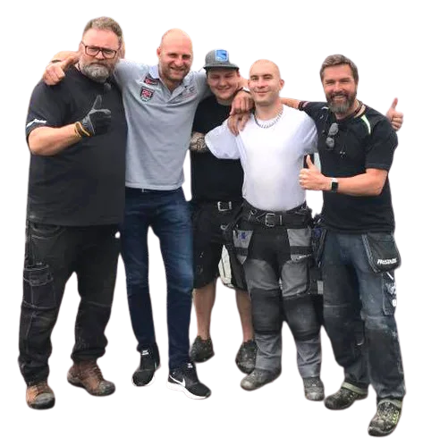
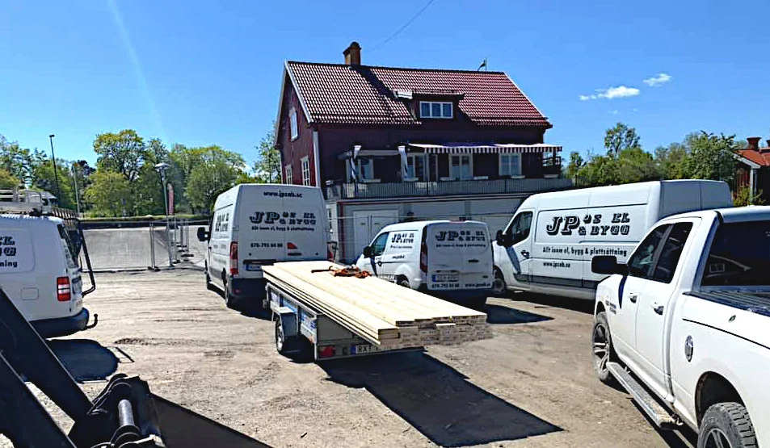

Byggare. Elektriker.
Och ett lag.
JP’s El & Bygg AB finns i Söderbärke, mellan Ludvika och Fagersta. Vi arbetar för både privatpersoner och företag.
Vi håller i trådarna.
Det ska vara enkelt att veta vem som tar ansvar för ditt projekt.
Vi arbetar med nybyggnation, ombyggnad, renovering och elinstallationer. Vår egen maskinpark gör att vi också kan hjälpa till med grävning och markarbete.
Oavsett om det är en mindre tillbyggnad hemma eller ett större ombyggnadsprojekt i en fastighet vill vi arbeta med samma noggrannhet. För oss är tydliga överenskommelser och en öppen dialog viktiga delar av jobbet.

Från idé till ett
färdigt resultat.
Tydlig planering och rätt yrkespersoner i rätt skede.
Vi börjar med din idé.
Berätta vad du vill göra. Ju tidigare vi kommer in, desto mer kan vi bidra med i planeringen.
Vi håller ihop arbetet.
Vi samordnar bygg, el och de andra yrkesgrupper som behövs. Du får en tidplan för projektet.
Vi bygger det färdigt.
Från mark och stomme till installationer och detaljer. Vi tar ansvar för det vi har kommit överens om.
En del av
Söderbärke.
Du hittar vårt kontor på Parkvägen 3. Härifrån planerar vi både små och stora uppdrag.
Behöver du bygg, el eller båda delarna? Hör av dig och berätta vad du har framför dig.
Vad säger kunderna?
Besök vår företagsprofil på Google för att läsa de omdömen som finns där.
Läs omdömen på Google
Våra samarbetspartners.
Rätt kompetens för olika delar av bygget.
Vad vill du bygga?
Berätta om din idé, så pratar vi om nästa steg.